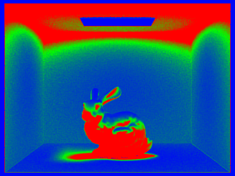

Project Overview
In this project, we coded a ray tracer. First, we worked on generating rays, shooting them, and checking if they hit something via ray-triangle and ray-sphere intersection. We then worked on speeding up our ray collision checking via implementing a Bounding Volume Hierarchy, or a BVH. By conglomerating our primitives' bounding volumes into different sections of the scene, we drastically sped up rendering by not having to worry about checking for intersections with objects that aren't anywhere near a ray's path. After speeding up our ray tracing process, we then set about implementing checking bounces of light, first with zero and one bounce illumination from a single light source (direct), then multiple bounce illumination from light reflected off of various objects in the scene. Finally, we used adaptive sampling to intelligently ration out our samples to yield a smoother looking image.
Part 1: Ray Generation and Intersection
Walk through the ray generation and primitive intersection parts of the rendering pipeline.
Ray generation:
In Task 1 of Part 1, we generated camera rays to shoot out into our scene. To aid in our explanation, I'll borrow the image from the spec:

To convert our camera ray from image space into sensor space, we did some simple conversions. First, since the sensor is centered at \((0, 0, -1)\) in 3D space versus the image space's \((0.5, 0.5)\) center coordinates, we have to adjust for this by subtracting both our \(x\) and \(y\) by \(0.5\). Next, by using the location of the virtual camera sensor's bottom left and top right corners, we "stretched" the image space to match that of the sensor space, whose dimensions are \(tan(.5 * hFov) * 2\) by \(tan(.5 * vFov) * 2\). In other words, we multiplied the image space's now-adjusted \(x\) and \(y\) coordinates by the width and height of the sensor's dimensions.
The next step was to convert this point on our sensor into a ray shooting out of our camera. We did this by setting the ray's origin to the position of our camera, provided in pos, and a direction. We calculated this direction to be the camera-to-world matrix provided in c2w times the point in sensor space (that we calculated above with a \(z\) value of \(-1\)) to get the point's position in the world space. This resulting value from the c2w multiplication was then normalized as per the specifications given on the spec. Finally, we set our new ray's min_t and max_t values to near_clip() and far_clip() respectively and returned that ray.
Primitive intersection parts of the rendering pipeline:
The primitive intersection parts of ray-triangle intersection and ray-sphere intersection simply check for if the passed-in ray intersects with the given primitive or not. In the case of the triangle, we first check if the ray hit the plane that the primitive is on, then check if the point on that plane that the ray hit is part of our primitive. For spheres, we solve the sphere equation, \((p - c)^2 - R^2 = 0\) where \(p = o + td\) from our ray equation to get a point of intersection (or two, in the event the ray pierces the sphere: in this case when we are returning a point, we return the point closer to the ray's origin).
----
Explain the triangle intersection algorithm you implemented in your own words.
To perform this check for Triangle::has_intersection, we performed the Möller Trumbore algorithm as noted in lecture. The gory details can be seen in our code and on that slide (or Wikipedia), but we basically calculated all the requisite values to obtain the Vector3D containing [t, b1, b2]. If our t value lay in the range of [r.min_t, r.max_t], then we would know that the ray hit the plane our primitive was on. To know if it hit our triangle, we checked to see if b1, b2, b3 values were between \(0\) and \(1\) (b1, b2, b3 are Barycentric coordinates, which we used in the previous project: if any of the values were not in this range, then we know that the point is not in the triangle).
{kind=link}
----
For Sphere::has_intersection, we ran a simpler test that was illustrated on this lecture slide from Lecture 9 to check if our ray hit our sphere.
{kind=link}
Show images with normal shading for a few small .dae files.
Part 2: Bounding Volume Hierarchy
Walk through your BVH construction algorithm. Explain the heuristic you chose for picking the splitting point.
(High-level overview of what we're doing here: A BVH is effectively a series of bounding boxes in bounding boxes. We categorize primitives in this manner so that we don't need to check all primitives in a scene when performing ray tracing: instead, if we hit a bounding box, we just need to check if our ray hits the bounding boxes in this bounding box, and if so, which ones, continuing until we hit a bounding box with no more bounding boxes inside of it (a leaf node).)
Our BVH construction algorithm first constructs a bounding box with primitives inside from the passed in Primitive vectors start and end. If the number of primitives is less than or equal to the passed-in max_leaf_size, we simply return the current node. Else, we set about splitting the box.
In our final implementation, we first found the average position of the centroids in our bounding box. While we were calculating this value, we figured out the coordinates of the centroids that were at the two extremes of the bounding box, storing them in a minPoint and maxPoint respectively. Taking our average centroid value, we then chose to split the box at the axis that had the greatest difference. We then compare the centroid values of all the primitives in the bounding box, sorting them into the left and right depending on if the centroid's axis value is less than or greater than or equal to the chosen axis of our average split point. For example, if we chose to split on the X axis, we'd compare the centroids' x values to our average centroid split point's x value to sort them into left and right groups. Finally, in the case where all the primitives are pushed to one side, we force the primitives to equally split into two sets regardless of their actual positions. This might not create an optimal BVH node, but averts a scenario we ran into where we entered an infinite loop (due to one side not having anything in it).
Show images with normal shading for a few large .dae files that you can only render with BVH acceleration.
Compare rendering times on a few scenes with moderately complex geometries with and without BVH acceleration. Present your results in a one-paragraph analysis.
| File | Render time (Before BVH) | Render time (After BVH) | Speedup (rounded to nearest tenth of a %) |
|---|---|---|---|
| beast.dae | 145.1387s | 0.0427s | 339903.3% |
| maxplanck.dae | 105.7981s | 0.00556s | 1902843.5% |
| peter.dae | 86.4121s | 0.04321s | 199981.7% |
We obtained a massive speedup from implementing BVH. BVH is powerful, and its primary strength lies in the fact that performing coarse ray-AABB intersection tests is much cheaper than performing the high-precision ray-triangle and/or ray-sphere intersection tests. A good BVH also allows us to quickly eliminate a large number of primitives from being considered as potential targets our ray may intersect with. Since each BVH node will ideally hold a good chunk of the primitives in the scene, if our ray intersects with one, that means it won't intersect with the other and we can effectively dump all the primitives in the other box(es) from our calculation.
Extra: Bugs in our BVH
Not part of the writeup's rubric, but something we thought might be interesting to share.
Initially, compared to the implementation tested in the spec, we weren't able to accomplish a very large speedup despite seemingly having implemented BVH sampling. To attempt to speed things up, we revisited our heuristic, which initially split the bounding box in the center across the axis that had the greatest difference in primitive locations, and replaced it with one that added up all the centroids in the bounding box, averaged their positions, and split the bounding box at the average centroid location across the axis with the largest difference in the primitives' positions. However, this didn't seem to speed things up either… until we realized that we had neglected to remove the loop in the source code for has_intersection that was iterating through every single primitive in the scene each time it was called (rather than just the primitives in the leaf node). After removing that and iterating through the leaf primitives only, our implementation saw the light (or millions of rays of light all at once, as it were) and the drastic speedup shown in the table above.
Part 3: Direct Illumination
Walk through both implementations (uniform hemisphere sampling and importance sampling lights) of the direct lighting function.
In both of these scenarios, our goal is singluar: to try and emulate the brightness of an object properly. How we go about doing this, however, depends on the approach we decide to take.
Uniform hemisphere sampling (UHS):
For uniform hemisphere sampling, for each "thing" or bit of a mesh that we want to render on our computer screen, we need to figure out how bright, or how luminous, it should be. (If the surface doesn't need to be lit, we ignore it.) To do this, we perform random sampling in the direction of the hemisphere of that point based on its surface normal.
If our sample hits something, it'll return its emission, or radiance, that we can then use to compute how bright our location should be. In order to make sure this luminosity is a good approximation and not just any random sample, we take a lot of random samples and average them out to calculate the object's lighting at that point.
In the code, this looks like the following:

L is calculated as specified above: it's simply the radiance of our intersection point. p.brdf(wi,wo) is the material information of the current surface, i.e. the place where we shot our ray to find the direct lighting, so to sample the brdf, we can call isect->bsdf->f(wo,wi). costheta is costheta(wi) (cosine of the sampled ray) via the Lambertian law of diffuse lighting: we're projecting light onto the surface normal to obtain a final intensity with any tilt/angles taken into account (the dot product of wi and wo).
Finally, to top off our Monte Carlo estimator, we need to divide all of this by the pdf. Here, our pdf is 1/(2pi) because we're performing hemisphere sampling.
Importance Sampling Lights:
In the case of importance sampling, while we do perform some random sampling in one scenario, we being by first figuring out if our light source directly hits hit_p, the hit point whose radiance we're calculating. If it does, then we know that this point will be directly lit and only need to sample it once (since we've found how bright it should be, and there's no point in continuing to obtain identical samples from the point light), and we can run Monte Carlo on this sample like we did in UHS, with a PDF value of 1.0.
Otherwise, we use area lighting to figure out the point's radiance. In a similar manner to UHS, we still take in random samples and calculate the Monte Carlo estimator in the same manner as before, but the main difference is in our PDF.
Here, instead of picking a random direction on the hemisphere and weighing it equally across the hemisphere, we use SceneLight::sample_L to obtain a direction w_i which is more likely to hit the light source, as well as the corresponding importance PDF to weigh the sample.
As this is area lighting, and not point lighting, we still need to take in a lot of samples and average them out (again, similar to UHS). However, since we try to properly weigh sample the directions that are more important given our prior knowledge of the scene (like the position and the size of the light source), our render ends up having less noise.
(As a final note, the reason why UHS ends up being noisy is due to its random sampling aspect. In theory, if we take enough samples, it will eventually converge to an image akin to the one rendered by importance sampling.)
Show some images rendered with both implementations of the direct lighting function.
|
|
|
Focus on one particular scene with at least one area light and compare the noise levels in soft shadows when rendering with 1, 4, 16, and 64 light rays (the -l flag) and with 1 sample per pixel (the -s flag) using light sampling, not uniform hemisphere sampling.
The following were all rendered with 1 sample per pixel:
|
|
|
|
|
|
Compare the results between uniform hemisphere sampling and lighting sampling in a one-paragraph analysis.
UHS has more noise than importance sampling, with the latter generating a generally smoother image. This is due to how UHS will weigh all pieces of data equally, while importance sampling weighs the data received from each sample according to how "important" the sample is expected to be in calculating the light in the scene. This importance depends on the direction that the light is coming from: light that comes directly from the light source is deemed more "important" than other directions. Since UHS doesn't discriminate among the samples received, and because Monte Carlo is an estimator (while a good approximation, it is not exact) that means that some less-important samples are altering our estimate more than they should, resulting in the speckled/noisy effect. (See the previous part for more details.)
Part 4: Global Illumination
Walk through your implementation of the indirect lighting function.
For indirect lighting, we're now concerned with how light is bouncing off of other objects, rather than just worrying about the rays of light that come directly from our light source (zero bounce) or the ones that come from our light source, bounce once, and then hit our camera (one bounce). So, for each point that we want to render, we're generating their irradiance values after a certain number of bounces (similar to this series of slides from lecture). By summing up the data we get from each successive bounce to a point, we can get a pretty good estimate for how the scene would look like in real life, where myriad bounces of light illuminate the objects around us
First, given a hit point, we calculate the "direct lighting" of said point. Note that this value might be different from what we got in part 3, since we don't know how deep into our recursion we might be--while it is the direct lighting of the hit point, that doesn't necessarily mean it's the light from the first bounce due to our recursion. Then, we check to see if we've hit our depth limit, terminating if r.depth <= 1.
If we haven't hit our depth limit, we load up Russian Roulette to see if we're going to continue onwards to the next bounce. The specs have suggested setting our cpdf = 0.4, so that's what we do, with one caveat: if we're at our first bounce (r.depth == max_ray_depth), we set cpdf = 1.0 to guarantee that we'll always move on to the second bounce, or first indirect bounce.
After passing R.Roulette, we prepare for the next bounce, creating a new Ray with depth = r.depth - 1 and shoot it out from our hit point to find an intersection. If there's no intersection, then there's no reason to trace the ray, so we exit. Else (there is an intersection), we recurse, calling at_least_one_bounce_radiance on our new ray. Our return value is processed in a similar manner to the previous part (Part 3: Direct Lighting), though we have an additional step where we divide our final lighting result by the cpdf of our R.Roulette to make sure our estimator is unbiased.
(Extra: Why do our renders have so much noise?)
The images we render with the methods covered in this part have a good amount of noise to them. While they are good approximations to how the images would look like in a naturally-lit room in the real world, because of our RNG-style method of sampling, potentially lacking the necessary number of samples, or prematurely killing off rays in R.Roulette, we end up with situations where the summed data we get isn't 100% accurate. To fix the noise, we need to either perform importance sampling or increase our sample rate.
Show some images rendered with global (direct and indirect) illumination. Use 1024 samples per pixel.
Pick one scene and compare rendered views first with only direct illumination, then only indirect illumination. Use 1024 samples per pixel.
|
|
|
For CBbunny.dae, compare rendered views with max_ray_depth set to 0, 1, 2, 3, and 100 (the -m flag). Use 1024 samples per pixel.
max_ray_depth = 0 |
max_ray_depth = 1 |
max_ray_depth = 2 |

max_ray_depth = 3 |
max_ray_depth = 100 |
Pick one scene and compare rendered views with various sample-per-pixel rates, including at least 1, 2, 4, 8, 16, 64, and 1024. Use 4 light rays.
All rendered with -l 4.
|
|
|
|

|
|
|
|
|
|
|
|
|
Part 5: Adaptive Sampling
Walk through your implementation of the adaptive sampling.
Building off of part 4's global illumination, we now tackle the issue of the noise it had generated. In order to generate a more accurate and clearer image, we now concern ourselves with the variance of the values we get for each pixel on our screen. If the values we get are heavily varied, for example, it's fair to assume that we aren't very close to the "true" value we're looking for, so we'll continue taking samples until we're comfortable generating an accurate value with the total data we've generated for that pixel. By being able to concentrate our samples on these areas that need more care and quitting early when we encounter areas that converge early.
In our implementation, as we ray trace each pixel on our viewing window or screen, we stop calculating the value the pixel should be once our result's variance is less than or equal to maxTolerance. This is opposed to tracing all num_samples samples, which may not be necessary depending on the pixel in question.
As we trace each sample, we also keep track of the number of samples we've traced and the sum of the illuminance (s1) and the sum of the illuminance squared (s2) of the samples we've traced thus far. Once our sample_count % samplesPerBatch == 0, we compute the mean (mu), standard deviation/variance (sigma), and \(I\) value of all the samples we've accumulated. If I <= maxTolerance * mu, we say that the result converges and terminate.
Finally, so we can see the output sampling rate image, we update sampleCountBuffer.
Pick one scene and render it with at least 2048 samples per pixel. Show a good sampling rate image with clearly visible differences in sampling rate over various regions and pixels. Include both your sample rate image, which shows your how your adaptive sampling changes depending on which part of the image you are rendering, and your noise-free rendered result. Use 1 sample per light and at least 5 for max ray depth.
|

|
|
Partner Collaboration
This project was largely carried by William, who had the best understanding of the project's contents, goals, and means of implementation. Lena handled the writeup, and learned quite a bit about the ray tracing process along the way.